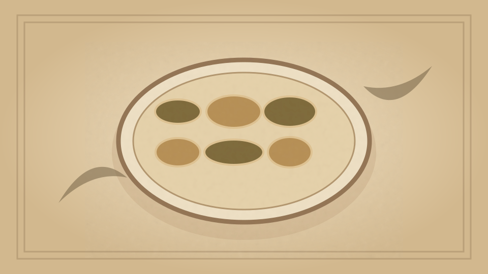

1910 · Fannie Merritt Farmer · CEREALS
Ravioli
The Boston Cooking-School Cook Book

Historical Recipe
The following text is extracted from the 1910 edition, retaining historical terminology and quantities.
Original Ingredients & Directions
1½ cups flour
½ egg
Warm water
¼ cup cracker crumbs
½ cup grated Parmesan cheese
¼ cup chopped cooked spinach
1 egg
White stock
Salt
Pepper
Sift flour on a board, make depression in centre, drop in one-half egg, and moisten with warm water to a stiff dough. Knead until smooth, cover, and let stand ten minutes; then roll as thin as a sheet of paper, using a rolling-pin. Cut in strips as long as paste, and two and three-fourth inches wide, using a pastry jagger. Mix cracker crumbs, spinach, and egg; moisten with stock and season with salt and pepper. Put mixture by three-fourths teaspoon on lower half of strips of paste, two inches apart. Fold upper part of paste over 93 lower part. Press edges together and between mixture with tips of thumbs, then cut apart, using pastry jagger. Cook in White Stock ten minutes, take up with skimmer, arrange a layer on hot serving dish, sprinkle generously with grated Parmesan cheese, cover with Tomato Sauce; repeat twice and serve at once.
Automatically extracted transcription; editorial verification pending. Historical instructions may not meet modern food-safety standards.